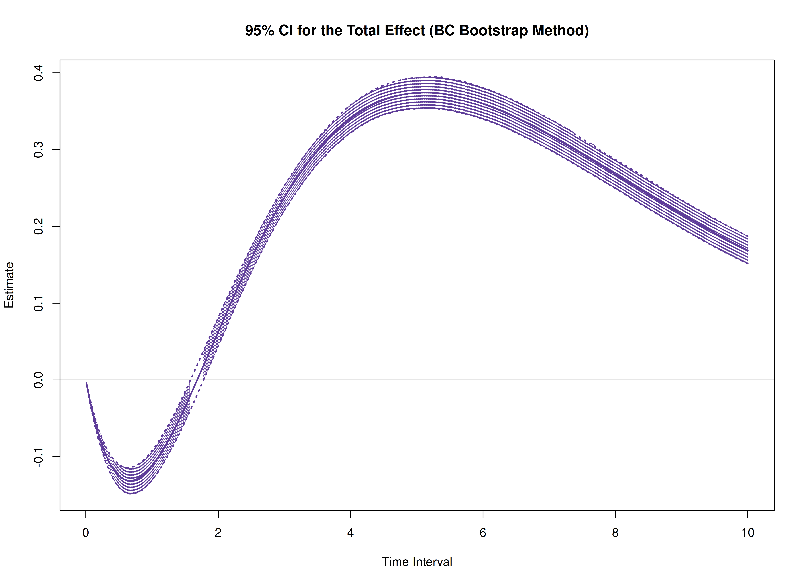
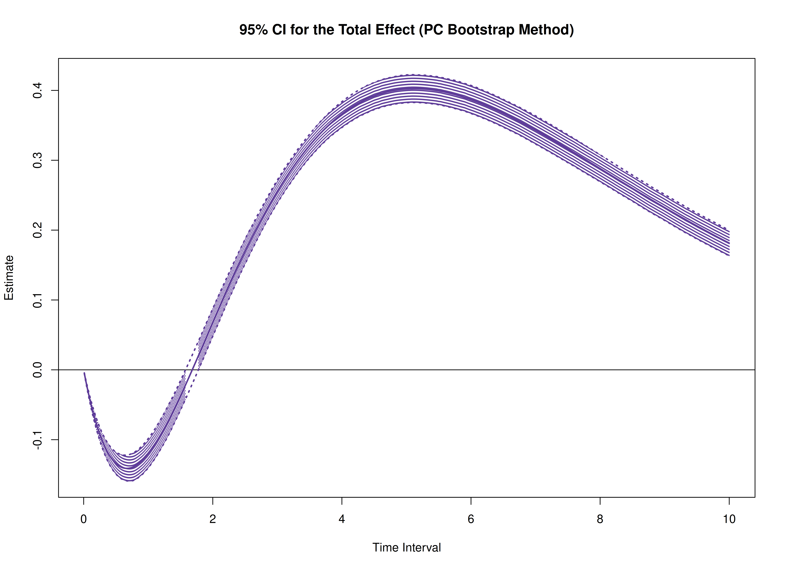
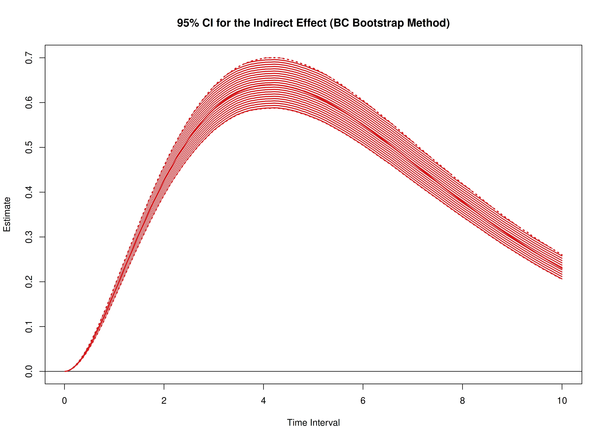
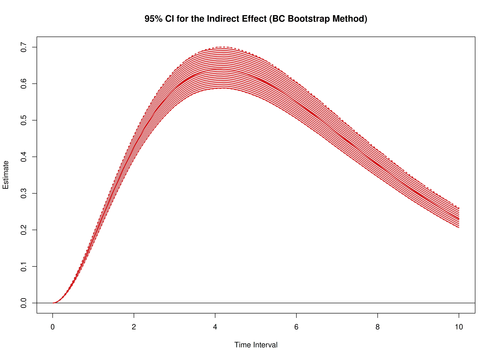

Total, Direct, and Indirect Effects in Continuous-Time Mediation Model (Bootstrap)
Ivan Jacob Agaloos Pesigan
2025-01-14
Source:vignettes/med-boot.Rmd
med-boot.RmdThe cTMed package provides a bootstrap approach, in
addition to the delta and Monte Carlo methods, for estimating and
quantifying uncertainty in total, direct, and indirect effects within
continuous-time mediation models across different time intervals.
In this example, we will use the fitted model from Fit
the Continuous-Time Vector Autoregressive Model Using the dynr
Package. The object fit represents a fitted CT-VAR
model created using the dynr package.
summary(fit)
#> Coefficients:
#> Estimate Std. Error t value ci.lower ci.upper Pr(>|t|)
#> phi_1_1 -0.4698862 0.3734948 -1.258 -1.2019225 0.2621501 0.1045
#> phi_2_1 0.4809285 0.1781928 2.699 0.1316771 0.8301800 0.0036 **
#> phi_3_1 -0.2711150 0.2083709 -1.301 -0.6795145 0.1372845 0.0969 .
#> phi_1_2 -0.1084163 0.2321649 -0.467 -0.5634512 0.3466185 0.3204
#> phi_2_2 -0.2331007 0.1105811 -2.108 -0.4498357 -0.0163658 0.0178 *
#> phi_3_2 0.5796100 0.1363571 4.251 0.3123549 0.8468651 <2e-16 ***
#> phi_1_3 0.1213907 0.1565825 0.775 -0.1855054 0.4282868 0.2193
#> phi_2_3 -0.0744270 0.0735117 -1.012 -0.2185074 0.0696533 0.1559
#> phi_3_3 -0.5738682 0.0916326 -6.263 -0.7534648 -0.3942715 <2e-16 ***
#> sigma_1_1 0.3007396 0.1122916 2.678 0.0806521 0.5208271 0.0038 **
#> sigma_2_1 0.0498648 0.0401853 1.241 -0.0288969 0.1286265 0.1076
#> sigma_3_1 -0.0741897 0.0428654 -1.731 -0.1582043 0.0098249 0.0421 *
#> sigma_2_2 0.0457407 0.0234338 1.952 -0.0001887 0.0916700 0.0258 *
#> sigma_3_2 0.0122009 0.0206733 0.590 -0.0283181 0.0527198 0.2777
#> sigma_3_3 0.0881988 0.0337203 2.616 0.0221082 0.1542894 0.0046 **
#> theta_1_1 0.1991190 0.0178903 11.130 0.1640546 0.2341833 <2e-16 ***
#> theta_2_2 0.2112520 0.0148880 14.189 0.1820720 0.2404319 <2e-16 ***
#> theta_3_3 0.1913294 0.0140468 13.621 0.1637981 0.2188606 <2e-16 ***
#> mu0_1_1 -0.2189028 0.1678919 -1.304 -0.5479650 0.1101593 0.0965 .
#> mu0_2_1 0.5735116 0.2813058 2.039 0.0221625 1.1248608 0.0210 *
#> mu0_3_1 0.6406938 0.7675896 0.835 -0.8637542 2.1451418 0.2022
#> sigma0_1_1 0.0663477 0.0789889 0.840 -0.0884677 0.2211631 0.2007
#> sigma0_2_1 0.0480017 0.1080453 0.444 -0.1637632 0.2597665 0.3285
#> sigma0_3_1 -0.3808122 0.3502062 -1.087 -1.0672038 0.3055793 0.1387
#> sigma0_2_2 0.3573753 0.2484766 1.438 -0.1296299 0.8443804 0.0755 .
#> sigma0_3_2 0.1946208 0.5038433 0.386 -0.7928940 1.1821355 0.3497
#> sigma0_3_3 2.8986422 1.8778449 1.544 -0.7818662 6.5791505 0.0617 .
#> ---
#> Signif. codes: 0 '***' 0.001 '**' 0.01 '*' 0.05 '.' 0.1 ' ' 1
#>
#> -2 log-likelihood value at convergence = 2176.87
#> AIC = 2230.87
#> BIC = 2344.67We need to extract the estimated parameters from the fitted object, which will be used to generate bootstrap samples.
est <- coef(fit)
n
#> [1] 5
time
#> [1] 100
delta_t
#> [1] 0.1
lambda
#> [,1] [,2] [,3]
#> [1,] 1 0 0
#> [2,] 0 1 0
#> [3,] 0 0 1
nu
#> [1] 0 0 0
mu
#> [1] 0 0 0
mu0 <- est[
c(
"mu0_1_1",
"mu0_2_1",
"mu0_3_1"
)
]
mu0
#> mu0_1_1 mu0_2_1 mu0_3_1
#> -0.2189028 0.5735116 0.6406938
sigma0 <- matrix(
data = est[
c(
"sigma0_1_1",
"sigma0_2_1",
"sigma0_3_1",
"sigma0_2_1",
"sigma0_2_2",
"sigma0_3_2",
"sigma0_3_1",
"sigma0_3_2",
"sigma0_3_3"
)
],
nrow = 3,
ncol = 3
)
sigma0
#> [,1] [,2] [,3]
#> [1,] 0.06634768 0.04800168 -0.3808122
#> [2,] 0.04800168 0.35737526 0.1946208
#> [3,] -0.38081224 0.19462078 2.8986422
sigma0_l <- t(chol(sigma0))
phi <- matrix(
data = est[
c(
"phi_1_1",
"phi_2_1",
"phi_3_1",
"phi_1_2",
"phi_2_2",
"phi_3_2",
"phi_1_3",
"phi_2_3",
"phi_3_3"
)
],
nrow = 3,
ncol = 3
)
phi
#> [,1] [,2] [,3]
#> [1,] -0.4698862 -0.1084163 0.12139067
#> [2,] 0.4809285 -0.2331007 -0.07442704
#> [3,] -0.2711150 0.5796100 -0.57386817
sigma <- matrix(
data = est[
c(
"sigma_1_1", "sigma_2_1", "sigma_3_1",
"sigma_2_1", "sigma_2_2", "sigma_3_2",
"sigma_3_1", "sigma_3_2", "sigma_3_3"
)
],
nrow = 3,
ncol = 3
)
sigma
#> [,1] [,2] [,3]
#> [1,] 0.30073959 0.04986477 -0.07418968
#> [2,] 0.04986477 0.04574067 0.01220087
#> [3,] -0.07418968 0.01220087 0.08819880
sigma_l <- t(chol(sigma))
theta <- diag(3)
diag(theta) <- est[
c(
"theta_1_1",
"theta_2_2",
"theta_3_3"
)
]
theta
#> [,1] [,2] [,3]
#> [1,] 0.199119 0.000000 0.0000000
#> [2,] 0.000000 0.211252 0.0000000
#> [3,] 0.000000 0.000000 0.1913294
theta_l <- t(chol(theta))
R <- 5L # use at least 1000 in actual research
path <- getwd()
prefix <- "ou"The estimated parameters are then passed as arguments to the
PBSSMOUFixed function from the simStateSpace
package, which generates a parametric bootstrap sampling distribution of
the parameter estimates. The argument R specifies the
number of bootstrap replications. The generated data and model estimates
are stored in path using the specified prefix
for the file names. The ncores = parallel::detectCores()
argument instructs the function to use all available CPU cores in the
system.
NOTE: Fitting the CT-VAR model multiple times is computationally intensive.
boot <- PBSSMOUFixed(
R = R,
path = path,
prefix = prefix,
n = n,
time = time,
delta_t = delta_t,
mu0 = mu0,
sigma0_l = sigma0_l,
mu = mu,
phi = phi,
sigma_l = sigma_l,
nu = nu,
lambda = lambda,
theta_l = theta_l,
ncores = parallel::detectCores(),
seed = 42
)The extract function from the simStateSpace
package is used to extract the bootstrap phi matrices as well as the
sigma matrices.
phi <- extract(object = boot, what = "phi")
sigma <- extract(object = boot, what = "sigma")In this example, we aim to calculate the total, direct, and indirect
effects of x on y, mediated through
m, over time intervals ranging from 0 to 10.
# time intervals
delta_t <- seq(from = 0, to = 10, length.out = 1000)We also need the estimated drift matrix from the original sample.
# estimated drift matrix
phi_hat <- matrix(
data = est[
c(
"phi_1_1",
"phi_2_1",
"phi_3_1",
"phi_1_2",
"phi_2_2",
"phi_3_2",
"phi_1_3",
"phi_2_3",
"phi_3_3"
)
],
nrow = 3,
ncol = 3
)
colnames(phi_hat) <- rownames(phi_hat) <- c("x", "m", "y")For the standardized effects, the estimated process noise covariance matrix from the original sample is also needed.
# estimated process noise covariance matrix
sigma_hat <- matrix(
data = est[
c(
"sigma_1_1", "sigma_2_1", "sigma_3_1",
"sigma_2_1", "sigma_2_2", "sigma_3_2",
"sigma_3_1", "sigma_3_2", "sigma_3_3"
)
],
nrow = 3,
ncol = 3
)Bootstrap Method
library(cTMed)
boot <- BootMed(
phi = phi,
phi_hat = phi_hat,
delta_t = delta_t,
from = "x",
to = "y",
med = "m",
ncores = parallel::detectCores() # use multiple cores
)
plot(boot)


plot(boot, type = "bc")

The following generates bootstrap confidence intervals for the standardized effects.
boot <- BootMedStd(
phi = phi,
sigma = sigma,
phi_hat = phi_hat,
sigma_hat = sigma_hat,
delta_t = delta_t,
from = "x",
to = "y",
med = "m",
ncores = parallel::detectCores() # use multiple cores
)
plot(boot)

plot(boot, type = "bc")
 
